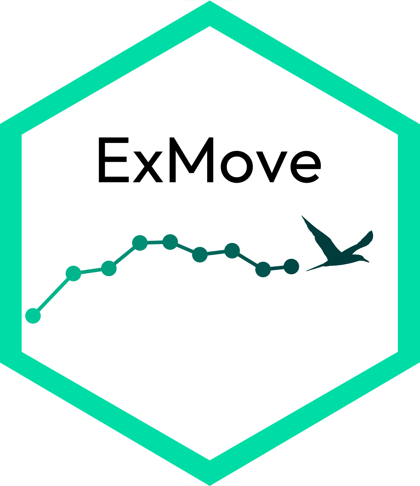
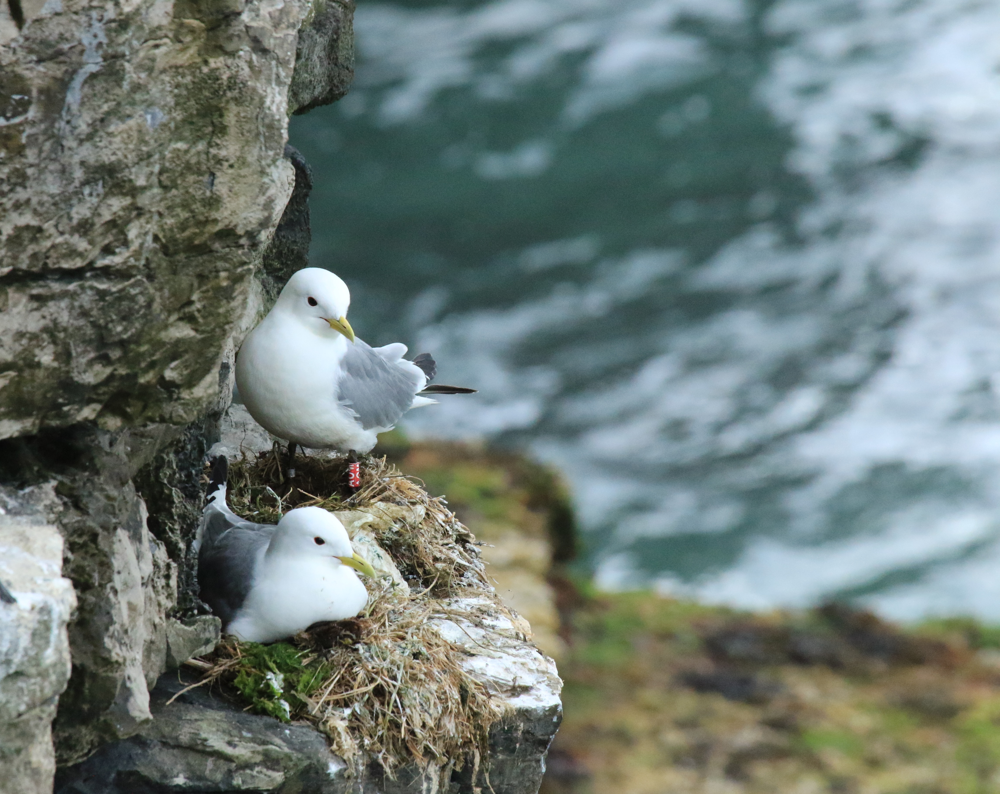
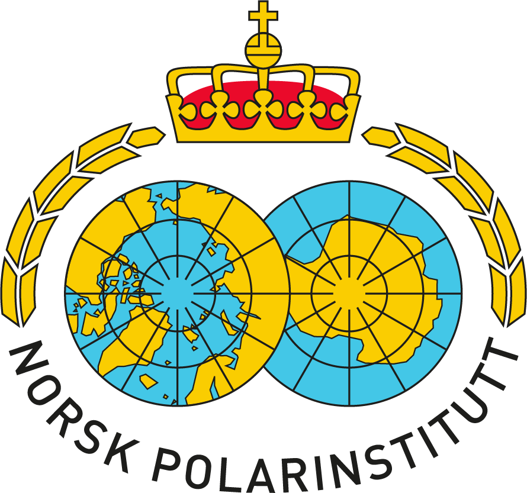
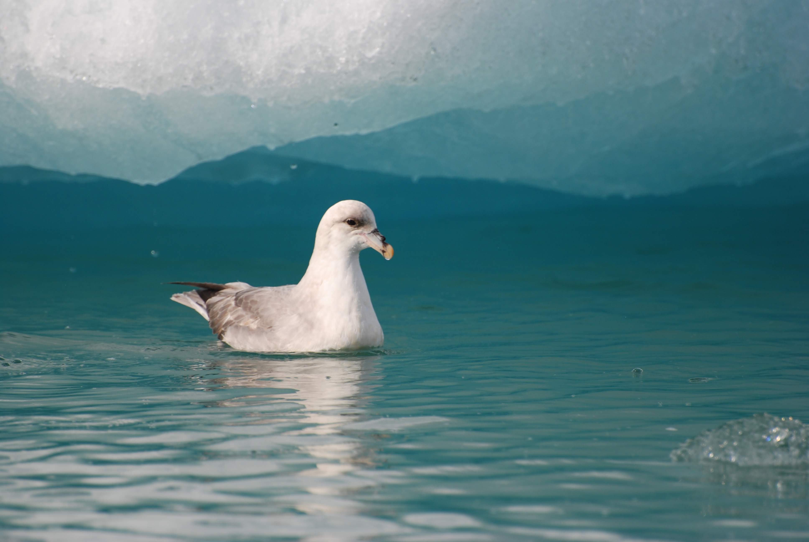

Projects
ExMove: An open-source toolkit for processing and exploring animal tracking data in R

Alongside Liam Langley, Stephen Lang, & Luke Ozsanlav-Harris, we have created a toolkit for processing biologging data from tag downloads to online archive. All resources and code can be accessed via the ExMove website and GitHub repository.
Aims:
Collate and process raw data from tracking devices, such as GPS, GLS and Argos, into a standardised data set for analyses and archiving in online tracking databases.
Facilitate robust data cleaning by providing an interactive shiny app to aid parameter determination and visualisation.
Generate a learning tool for users to develop skills in animal movement analysis.
Maximize stability by using a few well-maintained core R packages, including here, tidyverse and sf.
Provide open source code, the initial steps of which can be adapted for biologging studies, such as merging and standardizing additional sensor data (e.g., immersion/TDR) from multiple individuals.
Chagos & Western Indian Ocean seabirds: connectivity & conservation

This ongoing project is part of the Bertarelli Programme in Marine Science.
Aims:
To understand the importance of the Chagos Archipelago Marine Protected Area for seabirds
To understand the causes and consequences of seabird connectivity across the Western Indian Ocean. In particular, the incidence and drivers of seabird prospecting, at-sea foraging habitat suitability, and the status of gene-flow among seabird colonies in the CA and WIO
Environmental drivers of individual and population movement strategies

I explored the influence of environmental heterogeneity, as a proxy for resource patchiness, on black-legged kittiwake, Rissa tridactyla, habitat selection, individual consistency, and reproductive success, during my PhD at the University of Liverpool.
Key findings:
Environmental heterogeneity most likely clusters resources into discrete patches. This provides foraging opportunity, creates competition among individuals with negative consequences for reproductive success and promotes individual specialisation in habitat selection.
Contributed to review of optimising biologging methods
Polar seabird monitoring and foraging ecology


I joined the Norwegian Polar Institute on expeditions to the Antarctic (Tor field station) and Arctic (Svalbard) to help with regular seabird monitoring, and foraging ecology studies.
Key findings:
Prey density effects predator foraging strategies, most likely via group vigilance and defense
Individual foraging strategy is linked to diet in Antarctic petrels, with implications for population resiliance to climate change and fishery impacts
Seabirds as indicators of marine litter

Monitoring plastic ingestion by northern fulmars, Fulmaris glacialis, in the Norwegian high Arctic, during my MSci at the University of Southampton.
Key findings:
Arctic marine litter levels were higher than expected from regional trends, and exceeded the ecological quality objective defined by OSPAR for European seas.
Highlighted the value of seabirds as bio-indicator species within marine policy, the connectivity of the global oceans, and the need for urgent regulation of plastic pollution in the Arctic
Contributed to ongoing monitoring and recommendation of standardised methods for quantifying debris ingestion in marine megafauna